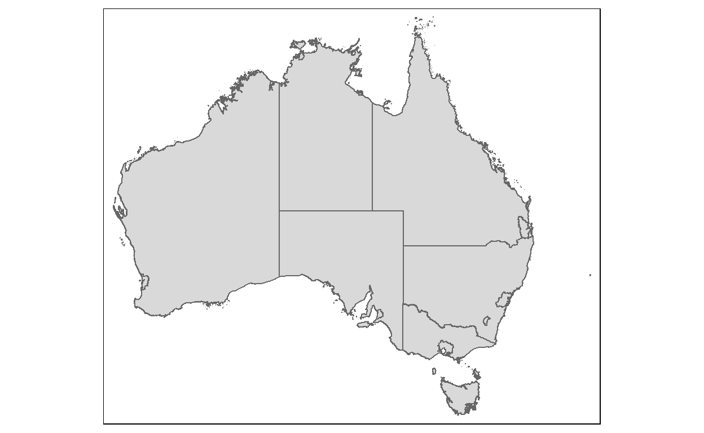

1 Overview
In this hands-on exercise, I have gained hands-on experience on how to calibrate Spatial Interaction Models (SIM) by using GLM() of Base R. The use case is adapted from Modelling population flows using spatial interaction models by Adam Dennett.
2 Data
Two data sets will be used in this hands-on exercise, they are:
- Greater Capital City Statistical Areas, Australia. It is in geojson format.
- Migration data from 2011 Australia Census. It is in csv file format.
3 Install and Launch R Packages
The R packages need for this exercise are as follows:
Spatial data handling
- sf, sp, ‘geojsonio’, ‘stplanr’
Attribute data handling
- tidyverse, especially readr and dplyr, reshape2,
Thematic mapping
- tmap
Statistical graphic
- ggplot2
Statistical analysis
- caret
packages = c('tmap', 'tidyverse',
'sp', 'caret',
'geojsonio', 'stplanr',
'reshape2', 'broom', 'sf')
for(p in packages){
if(!require(p, character.only = T)){
install.packages(p)
}
library(p, character.only = T)
}
# library(devtools)
# install_version("sf", version = "0.9-8", repos = "http://cran.us.r-project.org")
# library(sf)
4 Geospatial Data
4.1 Download Data
- Download a copy of Greater Capital City Statistical Areas boundary layer from a dropbox depository by using geojson_read() of geojsonio package
Aus <- geojson_read("https://www.dropbox.com/s/0fg80nzcxcsybii/GCCSA_2016_AUST_New.geojson?raw=1", what = "sp")
4.2 Extract Data
Ausdata <- Aus@data
4.3 Convert to sf object and set CRS
- Use st_as_sf() of sf package to convert to sf object
- Use st_set_crs() of sf package to set CRS
AusSF <- st_as_sf(Aus) %>%
st_set_crs(4283)
4.4 Check simple features
- Use st_is_valid() of sf package to check if all the simple features are valid
st_is_valid(AusSF)
[1] TRUE FALSE TRUE TRUE TRUE TRUE TRUE TRUE TRUE TRUE TRUE
[12] FALSE TRUE TRUE TRUEResults above show that:
- There are several invalid features
4.5 Fix simple features
- Use st_make_valid() of sf package to fix features
AusSF <- st_make_valid(AusSF)
4.6 Check simple features again
- Use st_is_valid() of sf package to ensure that all the simple features are valid
st_is_valid(AusSF)
[1] TRUE TRUE TRUE TRUE TRUE TRUE TRUE TRUE TRUE TRUE TRUE TRUE TRUE
[14] TRUE TRUE4.7 Display boundary layer
- Use qtm() of tmap package to plot AusSF simple feature data.frame
tmap_mode("plot")
qtm(AusSF)

4.8 Display Data Table
- Use head to view the first few rows of data table
head(AusSF, 10)
Simple feature collection with 10 features and 6 fields
Geometry type: MULTIPOLYGON
Dimension: XY
Bounding box: xmin: 112.9211 ymin: -39.15919 xmax: 159.1092 ymax: -9.142176
Geodetic CRS: GDA94
GCCSA_CODE GCC_CODE16 GCCSA_NAME STATE_CODE
1 1RNSW 1RNSW Rest of NSW 1
2 1GSYD 1GSYD Greater Sydney 1
3 2GMEL 2GMEL Greater Melbourne 2
4 2RVIC 2RVIC Rest of Vic. 2
5 3RQLD 3RQLD Rest of Qld 3
6 3GBRI 3GBRI Greater Brisbane 3
7 4RSAU 4RSAU Rest of SA 4
8 4GADE 4GADE Greater Adelaide 4
9 5GPER 5GPER Greater Perth 5
10 5RWAU 5RWAU Rest of WA 5
STATE_NAME AREA_SQKM geometry
1 New South Wales 788442.589 MULTIPOLYGON (((159.0611 -3...
2 New South Wales 12368.193 MULTIPOLYGON (((151.266 -33...
3 Victoria 9992.512 MULTIPOLYGON (((144.9065 -3...
4 Victoria 217503.119 MULTIPOLYGON (((146.6858 -3...
5 Queensland 1714330.123 MULTIPOLYGON (((150.7377 -2...
6 Queensland 15841.960 MULTIPOLYGON (((153.3738 -2...
7 South Australia 981015.072 MULTIPOLYGON (((136.1844 -3...
8 South Australia 3259.836 MULTIPOLYGON (((138.5269 -3...
9 Western Australia 6416.222 MULTIPOLYGON (((115.7132 -3...
10 Western Australia 2520230.017 MULTIPOLYGON (((117.896 -35...Results above show that:
- With close examination, the code is not in order.
- We have to reorder the code column
4.9 Order data table
Simple feature collection with 10 features and 6 fields
Geometry type: MULTIPOLYGON
Dimension: XY
Bounding box: xmin: 112.9211 ymin: -39.15919 xmax: 159.1092 ymax: -9.142176
Geodetic CRS: GDA94
GCCSA_CODE GCC_CODE16 GCCSA_NAME STATE_CODE
2 1GSYD 1GSYD Greater Sydney 1
1 1RNSW 1RNSW Rest of NSW 1
3 2GMEL 2GMEL Greater Melbourne 2
4 2RVIC 2RVIC Rest of Vic. 2
6 3GBRI 3GBRI Greater Brisbane 3
5 3RQLD 3RQLD Rest of Qld 3
8 4GADE 4GADE Greater Adelaide 4
7 4RSAU 4RSAU Rest of SA 4
9 5GPER 5GPER Greater Perth 5
10 5RWAU 5RWAU Rest of WA 5
STATE_NAME AREA_SQKM geometry
2 New South Wales 12368.193 MULTIPOLYGON (((151.266 -33...
1 New South Wales 788442.589 MULTIPOLYGON (((159.0611 -3...
3 Victoria 9992.512 MULTIPOLYGON (((144.9065 -3...
4 Victoria 217503.119 MULTIPOLYGON (((146.6858 -3...
6 Queensland 15841.960 MULTIPOLYGON (((153.3738 -2...
5 Queensland 1714330.123 MULTIPOLYGON (((150.7377 -2...
8 South Australia 3259.836 MULTIPOLYGON (((138.5269 -3...
7 South Australia 981015.072 MULTIPOLYGON (((136.1844 -3...
9 Western Australia 6416.222 MULTIPOLYGON (((115.7132 -3...
10 Western Australia 2520230.017 MULTIPOLYGON (((117.896 -35...4.10 Convert to sp object
- Use as() with argument ‘Spatial’ to convert to sp object
Aus <- as(AusSF1, "Spatial")
4.11 Calculate Distance Matrix
In our spatial interaction model, space is one of the key predictor variables. In this example we will use a very simple Euclidean distance measure between the centroids of the Greater Capital City Statistical Areas as our measure of space.
Caution note: With some areas being huge, there are obvious potential issues with this (for example we could use the average distance to larger settlements in the noncity areas). However as this is just an example and will proceed with a simple solution for now.
4.11.1 Re-project to projected coordinate system
- The original data is in geographical coordinate system and the unit of measurement is in decimal degree, which is not appropriate for distance measurement. Before we compute the distance matrix, we will re-project the Aus into projected coordinate system.
- Use spTransform() of sp package
AusProj <- spTransform(Aus,"+init=epsg:3112")
summary(AusProj)
Object of class SpatialPolygonsDataFrame
Coordinates:
min max
x -2083066 2346598
y -4973093 -1115948
Is projected: TRUE
proj4string :
[+proj=lcc +lat_0=0 +lon_0=134 +lat_1=-18 +lat_2=-36 +x_0=0
+y_0=0 +ellps=GRS80 +units=m +no_defs]
Data attributes:
GCCSA_CODE GCC_CODE16 GCCSA_NAME
Length:15 Length:15 Length:15
Class :character Class :character Class :character
Mode :character Mode :character Mode :character
STATE_CODE STATE_NAME AREA_SQKM
Length:15 Length:15 Min. : 1695
Class :character Class :character 1st Qu.: 4838
Mode :character Mode :character Median : 15842
Mean : 512525
3rd Qu.: 884729
Max. :2520230 4.11.2 Compute distance matrix
- Technically, we can used st_distance() of sf package to compute the distance matrix.
- However, since the process took much longer time to complete, spDist() of sp package is used instead.
dist <- spDists(AusProj)
dist
[,1] [,2] [,3] [,4] [,5] [,6]
[1,] 0.0 391437.9 682745.0 685848.4 707908.1 1386485.4
[2,] 391437.9 0.0 644760.8 571477.3 750755.8 1100378.3
[3,] 682745.0 644760.8 0.0 133469.9 1337408.0 1694648.9
[4,] 685848.4 571477.3 133469.9 0.0 1296766.5 1584991.5
[5,] 707908.1 750755.8 1337408.0 1296766.5 0.0 998492.1
[6,] 1386485.4 1100378.3 1694648.9 1584991.5 998492.1 0.0
[7,] 1112315.7 819629.7 657875.7 541576.5 1550134.5 1477964.9
[8,] 1462171.3 1082754.7 1212525.3 1081939.7 1655212.1 1192252.9
[9,] 3226086.3 2891531.5 2722337.4 2633416.1 3531418.0 2962834.0
[10,] 2870995.7 2490287.4 2542772.5 2424001.8 2993729.9 2239419.3
[11,] 1064848.2 1192833.0 603165.2 731624.1 1772756.1 2280386.7
[12,] 999758.0 1096764.5 489273.6 615173.0 1705581.2 2176139.6
[13,] 3062979.3 2699307.7 3113837.0 2981210.5 2780660.8 1782227.9
[14,] 2323414.2 1945803.1 2323404.3 2190310.9 2143514.5 1183495.9
[15,] 256289.3 412697.8 430815.8 452584.3 948547.6 1505884.6
[,7] [,8] [,9] [,10] [,11] [,12]
[1,] 1112315.7 1462171.3 3226086.3 2870995.7 1064848.2 999758.0
[2,] 819629.7 1082754.7 2891531.5 2490287.4 1192833.0 1096764.5
[3,] 657875.7 1212525.3 2722337.4 2542772.5 603165.2 489273.6
[4,] 541576.5 1081939.7 2633416.1 2424001.8 731624.1 615173.0
[5,] 1550134.5 1655212.1 3531418.0 2993729.9 1772756.1 1705581.2
[6,] 1477964.9 1192252.9 2962834.0 2239419.3 2280386.7 2176139.6
[7,] 0.0 602441.7 2120117.7 1884897.3 1170300.0 1049301.5
[8,] 602441.7 0.0 1879873.6 1408864.5 1765685.0 1644255.7
[9,] 2120117.7 1879873.6 0.0 963094.8 3030825.1 2933427.1
[10,] 1884897.3 1408864.5 963094.8 0.0 3007005.8 2891500.6
[11,] 1170300.0 1765685.0 3030825.1 3007005.8 0.0 121449.6
[12,] 1049301.5 1644255.7 2933427.1 2891500.6 121449.6 0.0
[13,] 2584759.7 1991775.4 2648782.4 1686414.7 3707567.5 3587636.5
[14,] 1788551.3 1198930.8 2215369.4 1302498.1 2913873.5 2793570.5
[15,] 936272.3 1368380.0 3055551.0 2766083.4 835822.4 759587.0
[,13] [,14] [,15]
[1,] 3062979 2323414 256289.3
[2,] 2699308 1945803 412697.8
[3,] 3113837 2323404 430815.8
[4,] 2981211 2190311 452584.3
[5,] 2780661 2143514 948547.6
[6,] 1782228 1183496 1505884.6
[7,] 2584760 1788551 936272.3
[8,] 1991775 1198931 1368380.0
[9,] 2648782 2215369 3055551.0
[10,] 1686415 1302498 2766083.4
[11,] 3707567 2913873 835822.4
[12,] 3587637 2793570 759587.0
[13,] 0 796710 3101576.8
[14,] 796710 0 2337203.6
[15,] 3101577 2337204 0.04.11.3 Convert dsitance matrix into distance pair list
- In order to integrate the distance matrix with the migration flow data.frame (in the later steps), we need to transform the newly derived distance matrix into a three columns distance values list.
- Use melt() of *reshape2 package of R to complete the task (we can also achieve the same task by using pivot_longer() of dplyr** package).
distPair <- melt(dist)
head(distPair, 10)
Var1 Var2 value
1 1 1 0.0
2 2 1 391437.9
3 3 1 682745.0
4 4 1 685848.4
5 5 1 707908.1
6 6 1 1386485.4
7 7 1 1112315.7
8 8 1 1462171.3
9 9 1 3226086.3
10 10 1 2870995.74.11.4 Convert unit of measurement from metres into km
- The unit of measurement of Australia projected coordinate system is in metre. As a result, the values in the distance matrix are in metres too. - Convert the distance values into kilometres.
distPair$value <- distPair$value / 1000
head(distPair, 10)
Var1 Var2 value
1 1 1 0.0000
2 2 1 391.4379
3 3 1 682.7450
4 4 1 685.8484
5 5 1 707.9081
6 6 1 1386.4854
7 7 1 1112.3157
8 8 1 1462.1713
9 9 1 3226.0863
10 10 1 2870.99575 Interaction Data
5.1 Import interaction data
- Use read_csv() of readr package
mdata <- read_csv("https://www.dropbox.com/s/wi3zxlq5pff1yda/AusMig2011.csv?raw=1",col_names = TRUE)
glimpse(mdata)
Rows: 225
Columns: 13
$ Origin <chr> "Greater Sydney", "Greater Sydney", "Greater~
$ Orig_code <chr> "1GSYD", "1GSYD", "1GSYD", "1GSYD", "1GSYD",~
$ Destination <chr> "Greater Sydney", "Rest of NSW", "Greater Me~
$ Dest_code <chr> "1GSYD", "1RNSW", "2GMEL", "2RVIC", "3GBRI",~
$ Flow <dbl> 3395015, 91031, 22601, 4416, 22888, 27445, 5~
$ vi1_origpop <dbl> 4391673, 4391673, 4391673, 4391673, 4391673,~
$ wj1_destpop <dbl> 4391673, 2512952, 3999981, 1345717, 2065998,~
$ vi2_origunemp <dbl> 5.74, 5.74, 5.74, 5.74, 5.74, 5.74, 5.74, 5.~
$ wj2_destunemp <dbl> 5.74, 6.12, 5.47, 5.17, 5.86, 6.22, 5.78, 5.~
$ vi3_origmedinc <dbl> 780.64, 780.64, 780.64, 780.64, 780.64, 780.~
$ wj3_destmedinc <dbl> 780.64, 509.97, 407.95, 506.58, 767.08, 446.~
$ vi4_origpctrent <dbl> 31.77, 31.77, 31.77, 31.77, 31.77, 31.77, 31~
$ wj4_destpctrent <dbl> 31.77, 27.20, 27.34, 24.08, 33.19, 32.57, 28~5.2 Combine the imported migration data
We need to add in our distance data that we generated earlier and create a new column of total flows which excludes flows that occur within areas (we could keep the within-area (intra-area) flows in, but they can cause problems so we will just exclude them for now ).
5.2.1 Create new column and set to small number
- Create a new total column which excludes intra-zone flow totals. Set them to a very very small number to avoid making the intra-zonal distance becoming 0.
5.2.2 Join with flow data
- We ordered our spatial data earlier so that our zones are in their code order. We can now easily join these data together with our flow data as they are in the correct order.
mdata$dist <- distPair$value
5.2.3 Set intra-zonal distances to 0
- While we are here, rather than setting the intra-zonal distances to 0, we should set them to something small (most intrazonal moves won’t occur over 0 distance)
- Use glimpse() to look at the new data
mdata$dist <- ifelse(mdata$dist == 0,5,mdata$dist)
glimpse(mdata)
Rows: 225
Columns: 16
$ Origin <chr> "Greater Sydney", "Greater Sydney", "Greater~
$ Orig_code <chr> "1GSYD", "1GSYD", "1GSYD", "1GSYD", "1GSYD",~
$ Destination <chr> "Greater Sydney", "Rest of NSW", "Greater Me~
$ Dest_code <chr> "1GSYD", "1RNSW", "2GMEL", "2RVIC", "3GBRI",~
$ Flow <dbl> 3395015, 91031, 22601, 4416, 22888, 27445, 5~
$ vi1_origpop <dbl> 4391673, 4391673, 4391673, 4391673, 4391673,~
$ wj1_destpop <dbl> 4391673, 2512952, 3999981, 1345717, 2065998,~
$ vi2_origunemp <dbl> 5.74, 5.74, 5.74, 5.74, 5.74, 5.74, 5.74, 5.~
$ wj2_destunemp <dbl> 5.74, 6.12, 5.47, 5.17, 5.86, 6.22, 5.78, 5.~
$ vi3_origmedinc <dbl> 780.64, 780.64, 780.64, 780.64, 780.64, 780.~
$ wj3_destmedinc <dbl> 780.64, 509.97, 407.95, 506.58, 767.08, 446.~
$ vi4_origpctrent <dbl> 31.77, 31.77, 31.77, 31.77, 31.77, 31.77, 31~
$ wj4_destpctrent <dbl> 31.77, 27.20, 27.34, 24.08, 33.19, 32.57, 28~
$ FlowNoIntra <dbl> 0, 91031, 22601, 4416, 22888, 27445, 5817, 7~
$ offset <dbl> 1e-10, 1e+00, 1e+00, 1e+00, 1e+00, 1e+00, 1e~
$ dist <dbl> 5.0000, 391.4379, 682.7450, 685.8484, 707.90~6 Visualise with Desire Line
In this section, you will learn how to prepare a desire line by using stplanr package.
6.1 Remove intra-zonal flows
mdatasub <- mdata[mdata$Orig_code!=mdata$Dest_code,]
6.2 Remove columns
- Use the od2line() function stplanr package to remove all but the origin, destination and flow columns.
mdatasub_skinny <- mdatasub[,c(2,4,5)]
travel_network <- od2line(flow = mdatasub_skinny, zones = Aus)
6.3 Convert flows to WGS84 projection
- Use spTransform() of sp package
travel_networkwgs <- spTransform(travel_network,"+init=epsg:4326" )
6.4 Convert Aug later to WGS84 projection
- Use spTransform() of sp package
AusWGS <- spTransform(Aus,"+init=epsg:4326" )
6.5 Set line widths
- Set the line widths to some sensible value according to the flow
w <- mdatasub_skinny$Flow / max(mdatasub_skinny$Flow) * 10
6.6 Plot desire line map